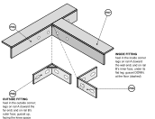
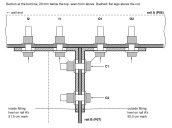
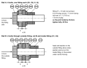
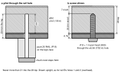

F · Steel corner assembly
The two rails are joined at the inside corner by two gusseted strut fittings, one each side of rail B's end, bolted to the vertical legs. This bolted joint, not the joining plates, carries the inside corner of top B. Both tops are standing (build manual step 7); you work from below.
!SEQUENCE: THE FITTINGS GO ON LAST SOURCE-DEFINED
Before the first fitting goes on, all of these must be done:
1 · The two surfaces are flush at the joint, leveled with the feet (never packed).
2 · Rail B's end touches the outer face of rail A's vertical leg with no gap, and rail B's outer face is on the 520 mark on rail A.
3 · Joining plates P1 and P2 are screwed across the joint. They align the tops; they do not carry the corner.
4 · Rail B's screws 1 and 2 are driven into top A. The inside fitting sits right under them and would block the driver.
| Part | Qty | | Hardware | Qty |
|---|
| P06 | Rail A, angle 2130, drilled (E) | 1 | H08 | 3/8-16 × 1½ in hex bolt, grade 5 | 6 |
| P07 | Rail B, angle 2130, drilled (E) | 1 | H09 | 3/8 flat washer, under each head and nut | 12 |
| P08 | Gusseted 90° strut fitting, 5 mm, legs 100.5 × 41, two 21 × 12 slots per leg VERIFIED | 2 | H10 | 3/8-16 nylon-insert lock nut | 6 |

Fig. F-1 · The corner seen from the knee space with the tops lifted away. Both fittings are drawn pulled out of place; the dashed lines run from each heel to where it goes. The outside fitting fills the outside corner, the inside one the pocket under rail B's flat leg, gusset down. Neither is a mirror image: they are the same part, the inside one turned gusset-down. SOURCE-DEFINED placement.
Which bolt goes where
| Bolts | Through | Head and washer | Washer and nut |
|---|
| O1, O2 | outside fitting + rail A's vertical leg | fitting side, in the knee space | rail A's inner face, under its flat leg |
| I1, I2 | inside fitting + rail A's vertical leg | fitting side, in the pocket under rail B | rail A's inner face, under its flat leg |
| C1, C2 | outside fitting + rail B's vertical leg + inside fitting | outside fitting, knee side | inside fitting, in the pocket |
Every bolt goes in from the fitting side: four through rail A's leg with one fitting each, two through rail B's leg with a fitting on each side.

Fig. F-2 · Section at the bolt line, seen from above. Datum: top A's back-left corner; x = 530 is 520 from rail A's wall end (rail A starts at x = 10). Arrows: insertion direction. The cut runs along the fitting slots, so their 21 length shows round each bolt.
1
Outside fitting. Heel into the outside corner, one leg flat on rail A's vertical leg toward the far end, the other on rail B's outer face, gusset up, facing the knee space. Push O1 and O2 through from the fitting side with a washer under each head; washer and nut on rail A's inner face. Finger tight.
2
Inside fitting. Into the pocket: heel in the inside corner, one leg on rail A's vertical leg toward the wall end, the other on the inner face of rail B's vertical leg, gusset pointing at the floor. Gusset-up it would sit 1 mm under the head of rail B's screw 1. I1 and I2 from the fitting side, washers, nuts on rail A's inner face. Finger tight.
3
Through bolts. C1 and C2 from the outside fitting: through the outside fitting, rail B's vertical leg and the inside fitting, washer under the head, washer and nut in the pocket. Finger tight. All six bolts are now in; none is tight.

Fig. F-3 · Bolt stack-ups, cut along the bolt. Plates drawn cut off. The fitting's slots are 21 × 12; the cut shows their 12 width. VERIFIED fitting; SOURCE-DEFINED bolts.
4
Check again, then tighten all six. Fingertip across the joint: no step. Rail B's end still touching rail A. Then tighten every bolt fully:
!TIGHTENING: 25 N·m (18 ft·lb) SOURCE-DEFINED
With a torque wrench, 25 N·m (18 ft·lb), under the standard dry torque even for a grade 2 bolt. Without one, pull as hard as one hand can on a 15 cm wrench, then stop.
Why tight, not snug: this is a friction joint. The fittings' 21 × 12 slots leave 2.5 mm of play across and 11.5 mm along each bolt, the 7/16 in rail holes 1.6 mm, so only the clamping force keeps rail B's corner from settling.
When: only after the two surfaces are flush and rail B's end touches rail A.
Later: if the corner ever drops a millimetre, retighten these six bolts.
How the rails hold the tops
Each rail is screwed to its top through the flat leg: nine #10 × 1 in pan-head Robertson screws (H03) in rail A, ten in rail B, 19 in all. Rail B's holes 1 and 2 land in top A (its first 120 lies under top A) and are driven in build-manual step 7.4, before the fittings; the rest go in with the tops face down.

Fig. F-4 · One rail screw in section. The pilot is 1/8 in, 25 from the flat leg's face (the face the puck stands on), which is 20 into the wood; the screw passes the 4.76 steel and goes 20.6 into the 28 top, leaving 7.4 under the laminate. SOURCE-DEFINED
| Item | mm | Source |
|---|
| Top thickness | 28 | SOURCE-DEFINED MEASURE ON HARDWARE calipers (if 27, shorten every screw into the top by 1) |
| Flat leg | 4.76 | SOURCE-DEFINED |
| Screw into the top | 20.6 | SOURCE-DEFINED; limit 21 into any top |
| Pilot depth from the leg's face | 25 | printed drill guide, puck 25 RAIL SOURCE-DEFINED |
Settling check. Lay a straightedge across the joint at the inside corner and write down any step. Check again after two weeks and after the first month; if the corner has settled, retighten the six fitting bolts.